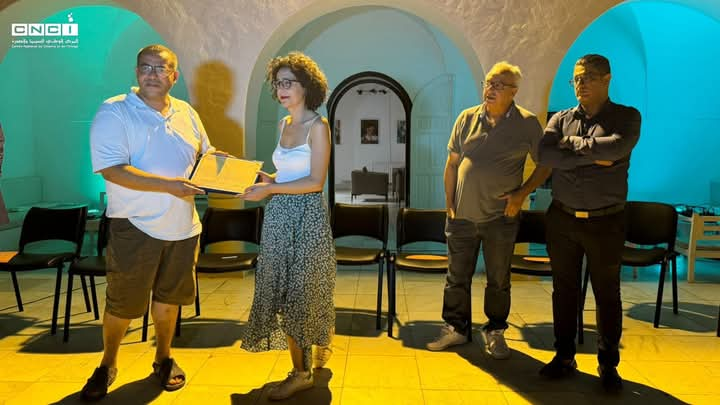
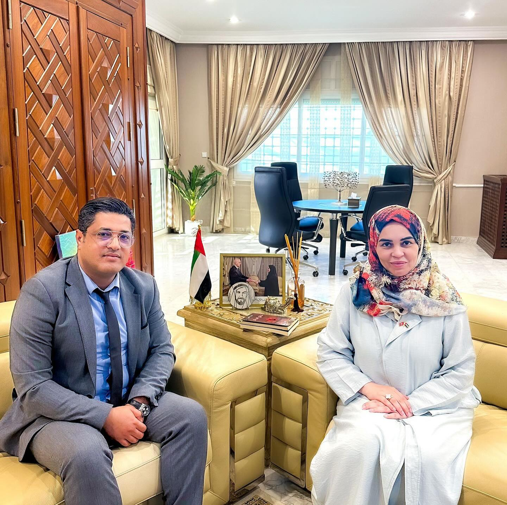

نعمان حباسي، كاتب وروائي، يتمتع بخبرة متميزة في إدارة المؤسسات الثقافية واإلشراف على المشاريع الثقافية الكبرى. خبير في تنسيق الفعاليات وتنظيم الأنشطة الثقافية المتنوعة، مع مهارات قيادية تمكنه من إدارة الفرق وتحقيق الأهداف الاستراتيجية للمؤسسات.
تعرف علي أكثر
تكريم خاص في مهرجان أسوان الدولي لأفلام المرأة، وهو حدث سينمائي بارز ُيسلط الضوء على قضايا المرأة ودورها في صناعة السينما. يعكس هذا التكريم التقدير للجهود المبذولة في دعم الثقافة السينمائية وإبراز الإبداع الفني.

إشراف وزيرة الشؤون الثقافية السيدة أمينة الصرارفي وبحضور الهيئة المديرة للمهرجان، إلى جانب عدد من إطارات الوزارة

تحية شكر و تشجيع إلى كل المشاركين في هذه الدورة

قاعة صوفي القلي بمدينة الثقافة.

المدير العام للمركز الوطني للسينما و الصورة – مبادرة كتابات

اجتمعت السيدة أمينة الصرارفي اليوم الاثنين 14 أكتوبر 2024 بالمديرين العامين للمؤسسات العمومية ذات الصبغة الغير ادارية.

📍 جائزة احسن فيلم قصير الوهر الذهبي لفيلم "ليني افريكو " لمروان لبيب. 📍 تنويه خاص من لجنة تحكيم الأفلام الوثائقية الطويلة لفيلم "الكابيتانة" لحسام صانصة مبروك لكافة فرق العمل في الأفلام المتوجة و مزيد من التألق للسينما التونسية
نعمان حباسي، كاتب وروائي، يتمتع بخبرة متميزة في إدارة المؤسسات الثقافية والإشراف على المشاريع الثقافية الكبرى. خبير في تنسيق الفعاليات وتنظيم الأنشطة الثقافية المتنوعة، مع مهارات قيادية تمكنني من إدارة الفرق وتحقيق الأهداف الاستراتيجية للمؤسسات.
يتميز بإبداع أدبي وقدرة مثبة على تعزيز الثقافة الوطنية من خالل مشاريع مبتكرة. حاصل على ماجستير مهني في التراث والسمعي البصري، وشهادة في الإدارة الثقافية من ألمانيا، والأستاذية في التنشيط الثقافي والشبابي.
تكريم خاص في مهرجان أسوان الدولي لأفلام المرأة، وهو حدث سينمائي بارز ُيسلط الضوء على قضايا المرأة ودورها في صناعة السينما. يعكس هذا التكريم التقدير للجهود المبذولة في دعم الثقافة السينمائية وإبراز الإبداع الفني.
تمثيل تونس لإقامة شراكات دولية في المجال السينمائي.

حدث مخصص لتعزيز السينما التونسية، يسلط الضوء على الإنتاجات المحلية في المهرجانات الصيفية من خلال العروض والمناقشات والتبادلات المهنية.
تحية شكر و تشجيع إلى كل المشاركين في هذه الدورة
قاعة صوفي القلي بمدينة الثقافة.
📍 جائزة احسن فيلم قصير الوهر الذهبي لفيلم "ليني افريكو " لمروان لبيب. 📍 تنويه خاص من لجنة تحكيم الأفلام الوثائقية الطويلة لفيلم "الكابيتانة" لحسام صانصة مبروك لكافة فرق العمل في الأفلام المتوجة و مزيد من التألق للسينما التونسية

سعدت باستقبال السيد نعمان الحباسي المدير العام للمركز الوطني للسينما والصورة، حيث كان ذلك مناسبة للحديث عن فرص التعاون في مجال الصناعة الثقافية والسينما والصورة بين البلدين.

تتناول هذه المقالة مفهوم الدبلوماسية الثقافية وأهميتها في تعزيز العلاقات الدولية، مع التركيز على التجربة التونسية...
حدث مخصص لتعزيز السينما وروابطها مع أشكال فنية أخرى، من خلال العروض وورش العمل واللقاءات المهنية.
برنامج مبتكر مخصص للفنون الحية، مؤسسًا أول محمية فنية في المنطقة الجبلية بالكاف.
حدث موسيقي وطني يحتفي بإرث صليحة، أيقونة الموسيقى التونسية.